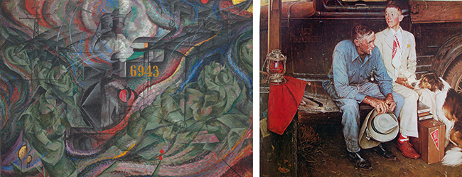
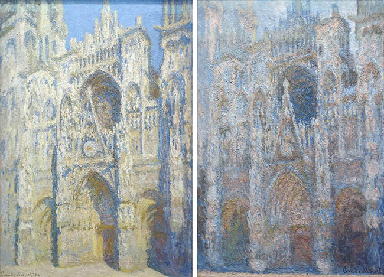
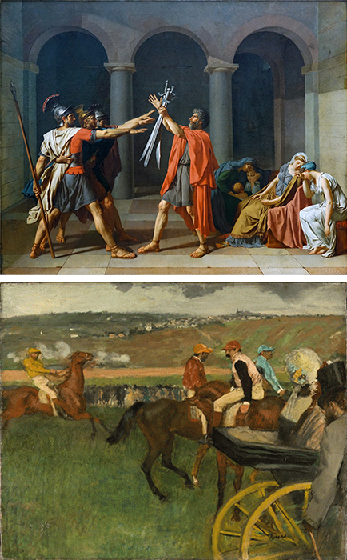
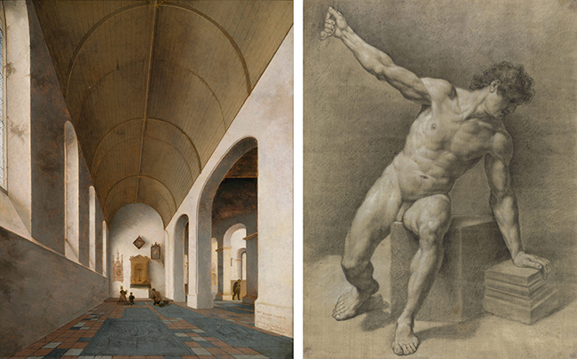
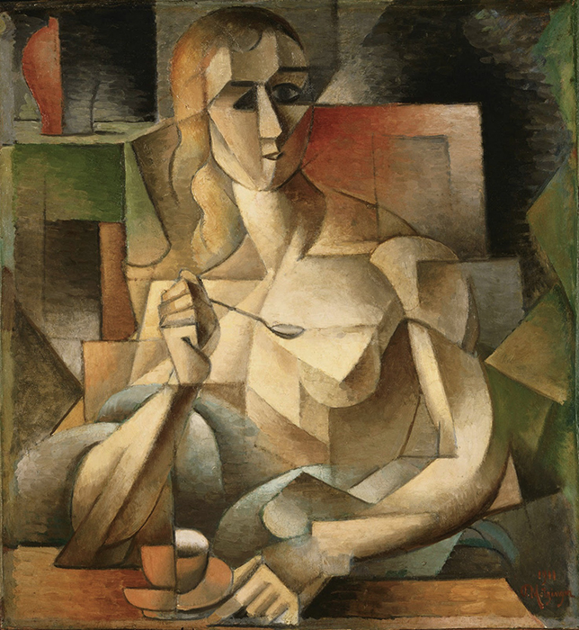
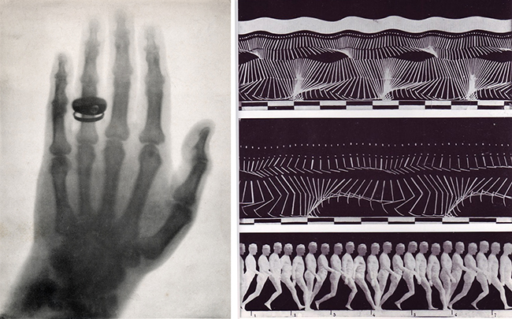
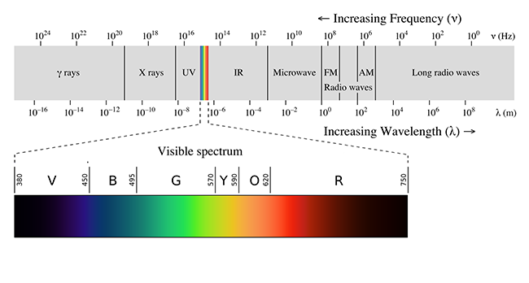
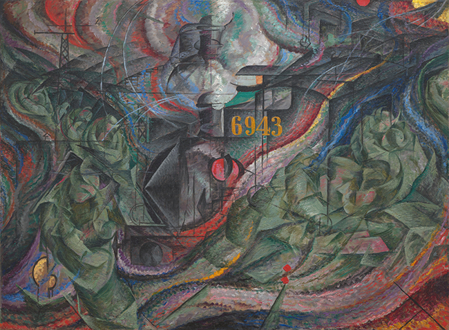
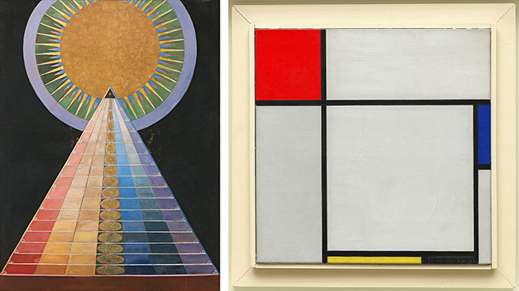

Welcome to our weekly article
By Dr.Charles Cramer and Dr.Kim Grant
If asked, most people would probably say that modern art is not true to reality. Indeed, modern art is practically defined by its bizarre distortions of reality; this is one reason why Norman Rockwell, whose work is more recent than Umberto Boccioni's, is not considered a modern artist. But looking like reality- what art historians call "naturalism"- is only one way pf being true to reality. As we shall see, the attempt to create art that was more true to reality than traditional naturalism was the motivation for some of the most radical modern art, even including Boccioni's States of Mind: The Farewells.
Impressionism and optical realism
When the Impressionist style first appeared on the art scene of the 1870's, many hostile viewers dismissed it as art by "lunatics" whose color perception was questionable and who did not have the techical skills to properly finish their paintings. Some critics claimed, however, that Impressionists paintings were more accurate than traditional naturalistic representations. Their argument was that the Impressionists represented their perception of objects rather than the objects themselves, and that the colors we percieve are often not identical to an object's actual or "local" color.
In the 1890s, Monet created dozens of paintings of Rouen Cathedral at different times of day in different weather. At dawn, the cathedral was tinged with blue light; in the late afternoon, it was radiant with oranges and yellows; while on cloudy days it was duller grayish tan. By recording how the appearances of objects are affected by different lighting conditions, the Impressionists argued that their paintings were more accurate representations of the way we see the world. What appears at first sight to be a radically unrealistic style is in fact more true to the way things actually look.
Discarding artificial conventions
The Impressionists recognized that much traditional art was accepted as true to reality only because it was familiar, not because it was accurate. For example, methods of composition taught in Academies tended to emphasize a central focus, equal balance on both sides, and clear depiction of spatial recession, as in David's Oath of the Horatii. Such compositions are, in fact, very artificially staged. When we move through the world, we are more likely to encounter scenes like the one represented in Degas's The Race Track: awkwardly unbalanced, abruptly cropped, and spatially ambigous. Critics who supported the Impressionists argued that artists like Degas were correcting artificial conventions and making art more true to reality.
Although the Impressionist style was new, this form of argument was not. In the sixteenth century artists and critics tried to draw a distinction between a true naturalism and a false naturalism (often derogatorily called "Mannerism"). False naturalism involved copying the work of other artists, and thus understanding nature only at second hand. The solution, some felt, was to discard the conventions of art and return to a more careful study of the original source, nature itself, just as the Impressionists did.
Is naturalism true to nature?
Impressionist artists sought greater truth to nature through more careful observation, but there is a sense in which our eyes inevitably distort the objects they percieve. Three ways they do so are embodied in the artistic thechniques of linear perspective, diminution, and foreshortening.
In linear perspective, wat are actually parallel lines in real life (such as railroad tracks or the edges of the floor tiles) converge in the representation. This effect, seen above in the Seanredam painting of a church interior, is integral to what is popularly considered a realistic style, but it is obviously not true to reality. Each of the tiles on the floor is in fact square. Similiarly, with diminution, objects appear to get smaller the farther away we are, but this is just an optical trick; each of those windows is in reality the same size.
Foreshortening occurs when we view an object from an angle at which it recedes away from us, so that the object appears to be contracted, shorter than its actual length. In the Academic figure study above on the right, the two thighs appear to be different lengths and shapes simply becauseone is viewed parallel to the actua reality, of course, both thighs are very similar (mirror images) in lengths and shapes.
Correcting for perceptual distortion
The style we colloquially call "realistic" is not literally true to reality, then. It is only a record of our perception of reality, from one angle, at one distance, at one moment in time, and in one kind of light, and all of these factors can distort the object. Some Modern art movements sought a representational system that would be more accurate to the true shapes of objects, rather than representing them deformed by perception.
Cubist painitngs seem at first sight to be even more bizarrely distorted and unrealistic than Impressionist paintings. In the Saloon Cubist Jean Metzinger's Le Gouter, objects appear to be twisted and broken up, but this is done in order to correct the distortions of the perspective and foreshortening. Metzinger shows things from multiple perspectives so we can better understand their true shapes. The left side of the tea cup on the table is seen from the side at eye level, but from that angle you wouldn't be able to tell that the cup has a round opening, so the right side is seen from above to complete our understanding of the round lip and concave shape of the cup. Similiarly, one of the woman's eyes is viewd in profile, while the other is seen facing us, and her left shoulder is seen from above, while the right is more straight on. Cubism doesn't "distort" objects; it shows them from multiple angles in order to give us more information about their true shapes that would be visible in traditional naturalistic representation.
Modernism and science
Another way of justifying the apparent distortions of modern art came in the form of appeals to science. Modern science provided a stream of new images that sparked artists' imaginations, as well as new theories that radically altered people's understanding of reality.
Beginning in the seventeenth century, new technologies based on the use of optical lenses provided evidence of microscopic and macroscopic worlds hitherto unsuspected. The discovery of wavelengths beyond the visible spectrum, including infrared and ultraviolet light as well as x-rays, gamma rays, and radio waves, made it clear that the human senses are very limited instruments for understanding the objective world. The visual culture of modern science provided new ways of representing and understanding reality. Stop-motion photography made rapid actions visible for study, and x-ray photography allowed peeks into the interior of solid forms, resulting in visions of reality beyond traditional naturalism.
One work that attempted to represent this new super-sensory reality was Italian Futurist Umberto Boccioni's States of Mind: The Farewells (1911). The only clearly legible feature in the painting is the number 6943 stenciled on what we gradually discern is the engine of a dark-gray train engine spewing steam in a station. The train is represented, Cubist-fashion, from multiple perspectives. The nose cone is in profile, while the body of the train recedes in a zig-zag toward the upper right then upper center of the canvas. In front of the train in green are a series of a couples saying goodbye (their two heads and embracing arms are clearest in the lower left) — or perhaps they are one couple, viewed multiple times in the manner of stop-action photography in order to show motion through time.
Two truss structures on the left suggest the radio towers that were constructed across Europe in the first decades of the twentieth century after the Italian Guglielmo Marconi harnessed radio waves for wireless communication. Correspondingly, the remainder of the composition is permeated with wave-forms in bright colors to suggest their high energy. Many forms of electromagnetic energy such as radio waves are invisible to the eye, but nonetheless permeate the world. Altogether, the work makes visible the new understanding of nature achieved by modern physics and presents a glimpse of reality beyond the limitations of the human senses.
Modernism and spiritualism
Modern artists' quest for truth to realities beyond human perception was also influenced by the explicitly non-scientific approaches of spiritualism. Although spiritual visions and discoveries are often seen as subjective, many modern artists saw them as revealing objective truths. They claimed their depictions of these discoveries were glimpses of a higher reality than that available to the human senses.
The Swedish artist Hilma af Klint painted a series of works called The Paintings for the Temple between 1905 and 1915 based in part on mystical visions she received from a spiritual guide. Around the same time, the Dutch artist Piet Mondrian undertook a close study of nature to eventually discover what he felt were the basic “building blocks” of all natural and artistic form: the primary colors red, yellow, and blue; the primary values black and white, and horizontal and vertical lines. Although both of these artists produced some artworks that are entirely non-representational in the sense that they do not look like nature, both argued that their spiritual quest revealed a higher reality than that available to the senses.
These artists all remind us that what is popularly considered ”realistic” in art is in fact only based on sense perceptions, which are inevitably partial, and which in many cases distort reality. By observing nature more closely, discarding artificial conventions, correcting for perceptual distortions, absorbing new scientific theories, and engaging in spiritual investigations, many modern artists rejected traditional naturalism in order to seek higher truths.